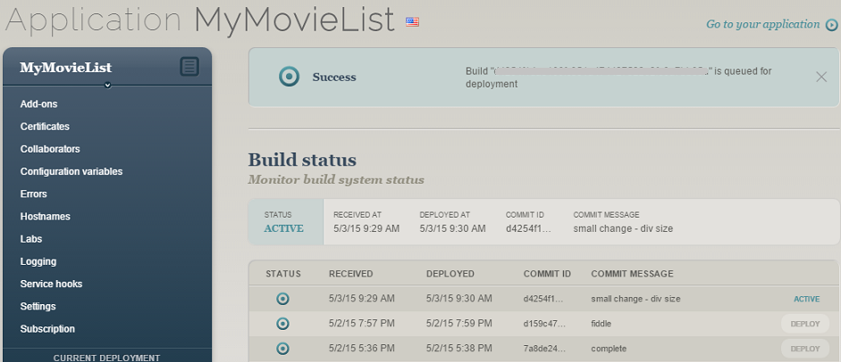
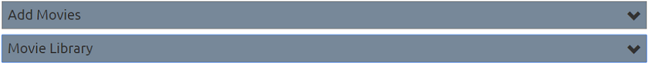
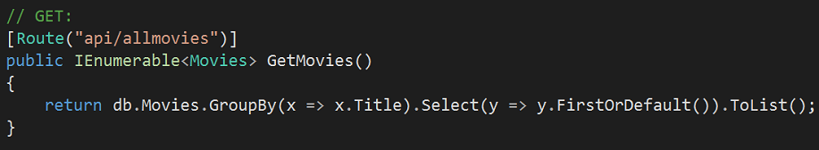
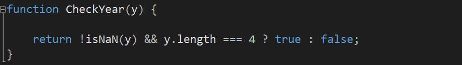

source code - GitHub
An ASP.NET MVC app with Entity Framework, using GitHub to store the source code and deployed to Appharbor with SQL Server.
The app is to:
The specs were met and it was nice getting to use appharbor as I have never used this service before. Installing and setting up SQL server was about the most tricky part. I had to setup an alias connection name so that the connection string would be linked correctly and allow me to run a database remotely and locally. It was also moderately challenging when I added columns to my database with Entity Framework as it wasn't carried over to Appharbor and the only way I could find to fix it was to uninstall SQL Server and re-install. This dropped the database and re-created the tables with the correct columns. Git was used for source control across GitHub and Appharbor.


- Image of the accordion
From a responsive web design point of view I decided to use an accordion on the home page to minimize the amount of data being displayed at once and the length of the page. I also chose the accordion because it is a jquery ui and I had never used jquery ui's in my ASP.NET app's before. This was an interesting exercise as I had to install the jquery ui library nuget package and then bundle/render all the relevant files. The accordion didn't resize well when data was added dynamically so I decided to set the accordion div height instead and that did the trick.
I also found glyphycons for bootstrap and that's the little down arrows on the headers for the accordion.

I enjoy using LINQ and lambda expressions. This one is interesting because it actually groups everything by title as one or more users may have the same movie in their list. By grouping it we are able to take just one title from that group and make sure there are no duplicate titles in the movie library being displayed on the home page. It also orders the titles alphabetically.

Part of developing a site is to validate the data. In the javascript code above, I check that the year being entered is actually 4 digits long and that it is infact a number. I specifically need the data like this as the API I use it for requires this information for the search it performs on it's database.
There are many more features that could be added, but I feel that I have developed all the skills I can at this point in time on this project. I am ready to move onto the next challenge, learn even more and develop my skills further.